Alright, let us see what Yuya has been up to during recent events!
Yugioh: The Power of Four
After everyone had left, Yuya went
up to his room, fell back on his bed, and sulked. No matter what he said about him being fine, his mom
wouldn't hear of it. He still couldn't believe he wasn't allowed to duel for a whole week! He'd been dueling for years, and he didn't have any issues up till now. He
had been raised to be both healthy and athletic, both of which are necessities for Action Duels.
Yuya: This sucks! My chest hasn't hurt since yesterday. I don't feel any pain at all!
Yuya complained to himself. Still, even though he felt fine, he couldn't help wondering what caused his pain to begin with. And he didn't understand why it hurt so
much. Even his doctor could not find the cause, making everyone worry over Yuya even more. While Yuya himself was worried if it happened again, he felt sure that
whatever had hurt him like that had nothing to do with his current health.
Sighing, he decided that lying on his bed all day wouldn't do him any good. He needed to go out and get some fresh air. Maybe a simple walk in the park? Surely that
wouldn't be a problem. He was just about to go and ask his mom for permission, but to his surprise she came knocking on his door.
Yoko: Yuya? May I come in? Yoko asked through the door.
Yuya: Sure. Yuya said as he sat up on his bed. After coming inside, Yoko sat down next to her depressed son.
Yoko: Look, I'm sorry if I'm being unfair Yuya. Its just we're all worried about you, especially me. I don't want whatever it was that happened to you happen
again. You are one of the healthiest boys I know, but sometimes things like this happen that even an experienced physician can't explain.
Yuya: I know Mom. But not being able to duel doesn't mean I'm cooped up here for the whole weekend, right?
Yuya asked, hoping his mom would be open to his request.
Yoko: Of course not. Yoko answered while shaking her head.
Yoko: You can do other activities that don't involve raising your heart rate in here. Did you have something in mind?
Yuya fidgeted for a bit before asking.
Yuya: Maybe just a... walk in the park? He tentatively asked.
Yuya: I know what you're thinking, but I will only be walking, no running! I promise to walk slowly the whole time! Please!
Yuya begged. Yoko did appear about to protest, but she saw how miserable her son looked. She could tell Yuya really wanted to get out of the house. Yoko sighed,
feeling she might regret her choice.
Yoko: Fine, Yuya. A slow walk in the park it is. Yuya then hugged his mom in gratitude.
Yuya: Thanks Mom!
Yuya said, feeling happier already, making Yoko smile herself. She then looked over at a picture on Yuya's beside table with her, Yuya, and his father. She really missed
Yusho, and knew he would also be
concerned about Yuya's unknown condition. However, he would also see to it that Yuya remained happy no matter how bad things got. Knowing that, she gave Yuya a bottled
water and some dried fruit and nuts as a snack while he was gone.
Yoko: Remember Yuya, slow walking only. Do NOTHING that would get you too excited! Yoko warned. Yuya nodded.
Yuya: Got it. Thanks again Mom! I'll be back soon!
With that, Yuya left for the park, which actually wasn't far from where he lived. He was allowed to bring his Duel Disk, with a promise that he wouldn't use it for
dueling; only phone calls and video messages. Yoko smiled after him before she closed the door behind her as she walked back in.
Chapter 7: A fateful encounter. Yuya VS Yuri.
After reaching the park not long after, Yuya took a path that ran along the edges. As Yuya walked, he breathed in the fresh scents from the pink colored flowers in the area. He didn't know why, but those flowers reminded him of when
Yuzu was around. He always seemed
to associate Yuzu with flowers. He smiled at the thought as he strolled on.
Yuya: I always smile when Yuzu was there. She's been there a lot for me, especially during the years since Dad vanished. I can't imagine my life if she weren't
around. I just wish Yuzu wouldn't swat me with that fan of hers when I say something that upsets her. Still, she's one of the best things in my life. Maybe, the
best...
He then started to shake his head.
Yuya: Ah, what I am I thinking? Yuzu's one of my best childhood friends. And now for some reason, I'm thinking of her as more than that. What's up with me?
Yuya said to himself, sounding annoyed and confused.
Yuya: Get a grip, Yuya. Yuzu is just a friend.
He then thought of the time during the day Sora was stalking him and had mistaken Yuzu for Yuya's girlfriend. Yuya's remark of how he could never date a rough girl like her earned him a good smack from Yuzu's fan.
At the time, he really hadn't thought of dating anyone, let alone Yuzu. He just didn't see her that way.
Yuya: Could it be that something about me... has changed? Something that makes me... think of her differently?
Yuya had no idea where these new thoughts are coming from.
Come to think of it though, he recalled a very recent memory with Yuzu. When he woke up in the hospital after his painful outburst, aside from his mother, Yuzu was
the first person he saw standing over him. He saw how happy and relieved she was that he was awake again. She also cried a little, lightly berating Yuya for making her
worry like that. When he first saw her then, he felt something he hadn't before.
Yuya had put a hand over where his heart was. Not because he was in pain again, but because that "something" had started to nag at him and he couldn't figure out what
it was. Whatever it was, it was making Yuya's heart beat a little faster when he started thinking of Yuzu. He then began bonking his head with his fist.
Yuya: Knock it off! I'm not supposed to get my heart racing out here! I promised Mom that!
Yuya complained to himself. He wished there was something that could keep his mind off his new personal dilemma.
Oddly enough, his wish got granted when he spotted someone jumping down from a tree near a performing platform.
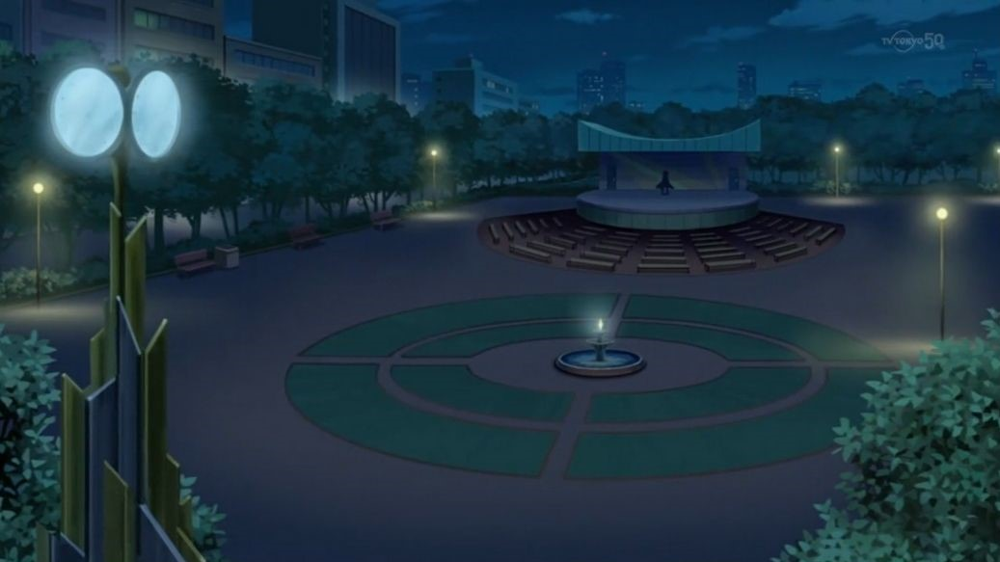
He then sat there and looked around like he was expecting someone to meet up with him. Curious, Yuya hid behind the closest tree to see. The stranger didn't seem to notice him.
As he sat waiting on the platform, Dennis
felt confident that Yuzu Hiragi wouldn't escape like the other bracelet girls had. With Edo Phoenix
and the Obelisk Force
at his command, he knew it would be a matter of time before
Sora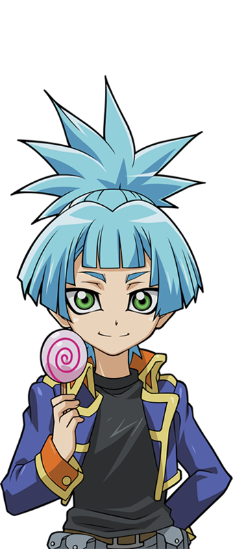
was defeated and carded.
He felt sorry for the little guy. Sora was a promising young Duel Soldier who, for some reason, got a little too attached to the girl the Professor needed captured.
Dennis: Poor Sora. He must've developed a real soft spot for that Yuzu girl. And he hasn't even been here for that long. He sighed in pity.
Dennis could understand that. He actually developed a likeness to the Xyz bracelet girl,
Ruri Kurosaki. She was kind,
caring, and loved to make others smile. Kind of like him. Maybe if he had a little more time, he might've actually done what Sora was trying to do. Of course, Dennis
wasn't that young and naïve. As much as he loved to entertain, and really did enjoy entertaining Ruri in their Duel, he couldn't abandon his mission for Academia...
or the Professor.
Dennis: he Professor made it clear that capturing those girls was a top priority. But, what priority? Why are those girls so special to him? The only things they seem to have in common are that they have the same face as
Serena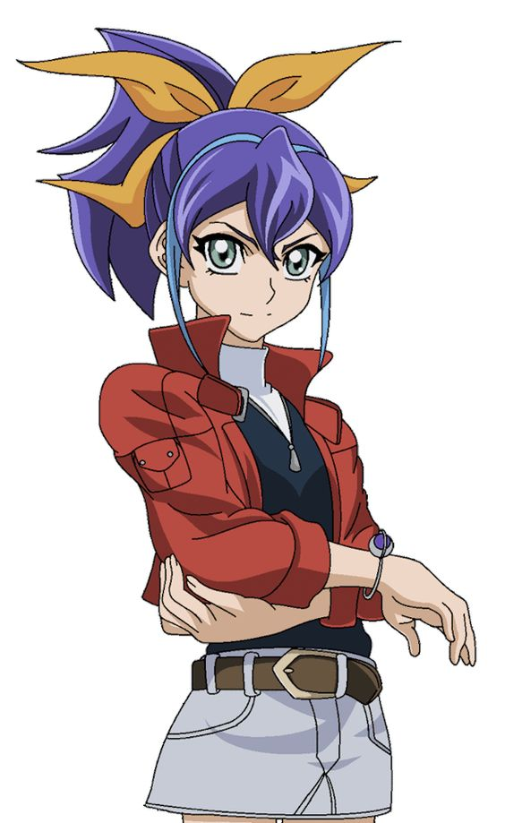
and they each have a bracelet like hers. I sorta wish I knew what...
Dennis' thoughts were interrupted when a figure instantly appeared beside him from a vortex of swirling energy. Dennis looked up and smiled.
Yuri said as he plopped down and sat next to Dennis. As they greeted one another, they had no idea they were being observed by someone sharing Yuri's likeness.
The moment he saw Yuri, Yuya's eyes nearly bulged out of his skull and his jaw nearly fell to the ground. He couldn't believe what he was seeing. He was surprised
enough when the second stranger came out of nowhere the way he did. The fact that this new person had the exact same face as he did, however, nearly caused him to
faint from shock.
Yuya: That guy! He looks... just like me! I must be seeing things!
Yuya quickly, but quietly, pinched himself hard to make sure he wasn't hallucinating. When he looked again, nothing had changed. The purple haired teen still strongly resembled him.
Yuya: But why? Why is there someone that looks like me?! Who the heck is he?!
As dumbfounded as he was, Yuya still tried to listen in on what the two were talking about.
Yuri: So, this is where I'm supposed to wait, huh? Yuri asked while looking around.
Dennis: According to Sora's memories, this is the ideal spot and time where no one would be around. Also, thankfully it isn't far from where the action is
happening. Hopefully you won't have to wait long. Edo will give you the signal soon.
Dennis told him.
Yuya: What? They know Sora? How?
Yuya quietly asked himself. He thought they must've come from wherever Sora learned his Fusion Summoning. After all, the kid didn't give him any details. He also
wondered who this Edo person was.
Yuri: Is that so Dennis? Well, I'll get bored really quick if no one's here for me to play with.
Yuri said, sounding bored. Dennis chuckled.
Dennis: I hear ya. I'd ask if we could duel to pass the time, but I know how that will turn out. I don't stand a chance against you, Yuri.
Yuri gave his own chuckle.
Yuri: Hehe, oh no doubt. He then went quiet and looked down, frowning. Dennis noticed this.
Dennis: Hey, what's up? You really are disappointed that I don't want us to duel, aren't you?
Dennis asked, playfully teasing his comrade. To his surprise, Yuri shook his head.
Yuri: That's not it. Things just haven't gone well for me lately. First, those two guys that caught me off guard when I tried to capture those girls, Ruri and
Rin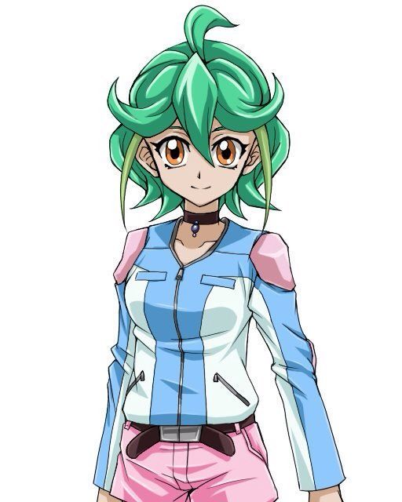. I never even saw the bastard who got me from behind. But both those incidents were nothing compared to when I confronted the guy that helped Serena escape... Yuki Judai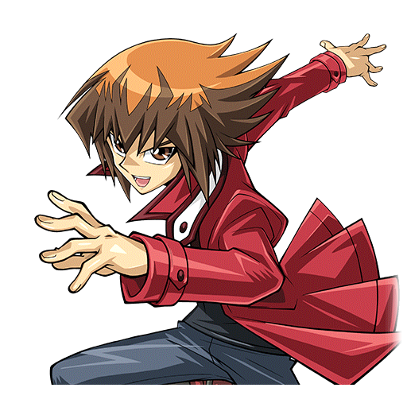. Yuri said in a low and fearful voice.
Yuya had no idea who the people were that Yuri was talking about. What did get his attention was that he tried to kidnap two girls and apparently failed to do so. And
another one, Serena, also somehow got away. He could tell that Yuri was not a good person, even if he did look like him. When he mentioned that guy, Judai Yuki, Yuri's
tone had changed. He sounded like he was afraid of the guy. Yuri's next statement confirmed it.
Yuri: When he confronted me in that hideout, I felt an overwhelming fear that I had never experienced in my life. I never feared anyone until now. And the way he
tossed me away like I was a rag doll...
He then looked at Dennis square in the eye.
Yuri: I'm telling you, that Judai wasn't a normal person. Maybe the guys he's working with aren't normal either. Regardless, whoever they are...
Yuri then sounded more angry.
Yuri: They'll all pay for humiliating me! He nearly yelled while tightening his fists.
Yuya could tell Yuri was not someone to piss off. From the sound of it, three people had already done so... and Yuri wanted revenge on them. Dennis patted Yuri's shoulder.
Dennis: Hey, I'm sure you'll get your chance to redeem yourself. Don't forget, we're not completely beaten yet. We still have one girl that hasn't alluded us. With
the Professor's new plan in play, I'm sure nothing can go wrong.
After taking a moment to calm himself, Yuri smiled again.
It wasn't a friendly smile, Yuya saw. He also became concerned that another girl was about to be kidnapped. Whoever this Professor was, Yuya believed he must be
dangerous. He felt he had to do something. He should head home and tell his mom what he had just seen and heard. Still, he stayed where he was and continued listening.
Maybe he could hear the name of the girl in question. In the next moment, Yuya wished he hadn't heard what Yuri said then.
Yuri: I hope you're right Dennis. Edo better do his job and take down the traitor, whether it would be by the Obelisk Force or his own hand. Either way, I will
definitely be taking Yuzu Hiragi to the Professor and hopefully get back on his good side.
He stated with an evil chuckle.
Yuya: Yuzu!? He's going to kidnap... Yuzu !?
Yuya at once felt more shocked, frightened and enraged at the same time. He had no idea which he felt more. He tightened his own fists, bared his teeth, and his whole body started shaking.
Yuya: NO! I WON'T LET HIM!
Throwing all caution to the wind, Yuya finally decided to confront the monster that shared his face.
Dennis was glad Yuri seemed to be in a more cheerful mood.
Dennis: That sounds like the Yuri I know! Happily anticipating on capturing his next prey.
Yuri smirked at him.
Yuri: You bet. Maybe this time we won't have any surprises...
Yuya: YOU'RE NOT TAKING YUZU ANYWHERE!
Yuri and Dennis shot to their feet in surprise when they heard an angry voice shouting at them. They then saw the owner of that voice coming out from behind a nearby
tree. To their greater surprise, it was a boy who looked strongly like Yuri. And they could tell that the new guy was pissed as hell.
Dennis: You were saying about no more surprises?
Dennis asked as he glanced at a stunned Yuri.
Yuri: Shut up. Yuri said quietly. Yuya approached them, not caring about what happened to him.
Yuya: I heard everything you two had said, including the part where you plan to kidnap Yuzu! I'm not going to let that happen! I won't let you lay one finger on her! Duel me, Yuri!
Yuya angrily challenged, slipping on his Duel Disk and activating it. He knew he was breaking his promises to his mother, but under the circumstances he felt he had no
choice. Yuri actually seemed amused, with Dennis looking curious.
Dennis: So, you're actually going to duel your lookalike?
Dennis asked. Yuri jumped down and put on his own Duel Disk, now standing before Yuya.
Yuri: I don't see why not. At the very least, I won't be sitting around and twiddling my thumbs waiting for Edo to contact me.
He said while activating his Duel Disk. Dennis nodded in agreement.
Dennis: Welp, you have fun Yuri! I'll see how things are going on Edo's end!
With that, Dennis jumped up the trees and was out of sight. Yuya would worry about Dennis later. Right now, his main concern was the guy before him wearing a wicked grin.
Yuri: So, you want to duel me to protect Yuzu? I take it she's your girlfriend? Yuri taunted. Yuya blushed a bit as he answered.
Yuya: Yuzu's just a friend! But she is very special to me! I'm not letting you take her! Rétorqua Yuya. Yuri gloussa de nouveau.
Yuri: How gallant of you. What's your name?
It's Yuya! Sakaki Yuya! Yuya replied strongly. Yuri then smiled like a predator about to stalk it's prey.
Yuri: Well then, Sakaki Yuya, show me if you have the skills to back up your claims!
Yuya: Believe me Yuri, I will!
At once, their duel of destiny began.
“DUEL !”
(Yuya: 4000 LP)(Yuri: 4000 LP)
Yuri: How about I let you take you the first turn? Yuri asked, confident he would prevail.
Yuya began. On one side of Yuya's Field, a gorilla with big drums floated in a glowing column. On the opposite side, a magician dressed in brown garb and held what
appeared to be a Duel Disk was being suspended in a similar column.
Yuri: Pendulum Scale? Yuri questioned, wondering what his opponent was doing.
Yuya: Swing, pendulum of souls! Draw an arc of light across the ether! Pendulum Shōkan! Appear now! Wondrous and beautiful dichromatic eyes!
“Odd Eyes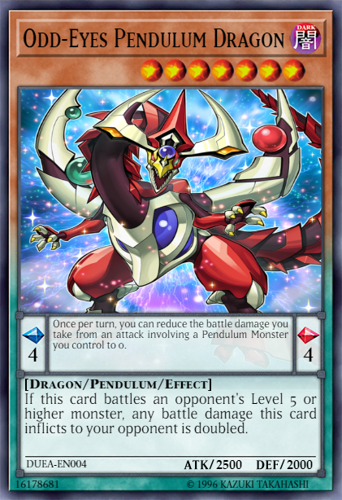Pendulum Dragon ”
!
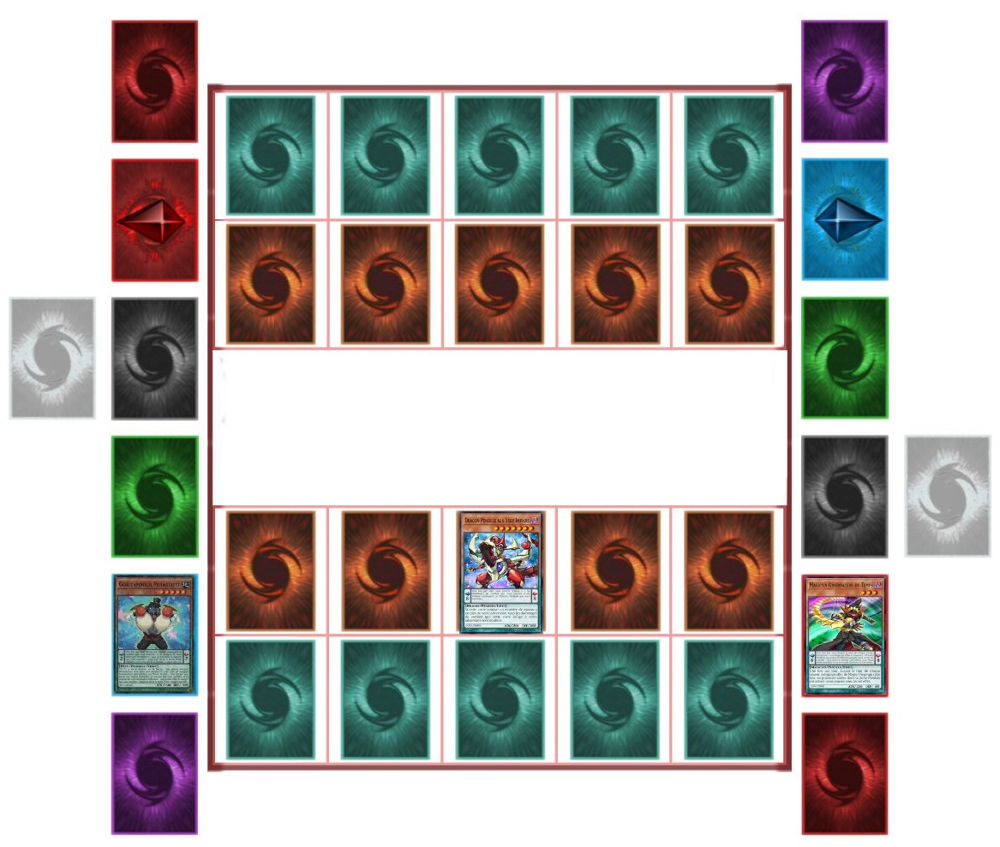
A ferocious horned red dragon with one red eye and one green eye, light tanned wings embedded with red and green orbs now stood before it's master, ready for battle.
Yuya: I end my turn!
Yuri stood in awe.
Yuri: Pendulum Shōkan? I've never heard of a Summoning method like that! Neat! And your dragon... So cool!
I see you're already getting serious! I better not hold back then!
He said excitedly. Yuri marveled at the beast before him.
Yuya: Shut up and start your turn already!
Yuya shouted impatiently. He didn't care what Yuri thought of his dragon or even his Pendulum Summoning. All he cared about was stopping that psychopath from getting near Yuzu. Yuri snickered.
Yuri: You're that eager, huh? Very well. My turn! Draw!
His eyes widened slightly, knowing he could summon "it" now. He was momentarily distracted by a blinking purple light on his Duel Disk. He knew it had to be the signal
from Edo. That meant Yuzu Hiragi must be secured at that moment. He should go now to capture her… but he chose not too. He didn't know why, but he felt he needed to
duel against Yuya Sakaki. Something deep inside him was telling him, no "begging" him, to face the boy that had his face. It was like an instinct he just couldn't
ignore. Edo would have to wait until Yuri's duel was over; he refused put this off for later.
Yuya: What are you waiting for? Get on with it! Yuri refocused his attention on his opponent.
Yuri: Don't be so hasty. You might regret it, and here's why! I activate
“Yugo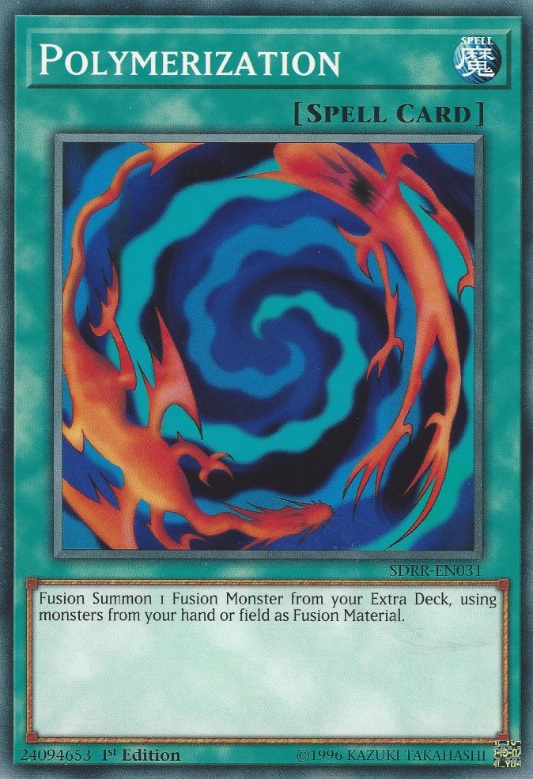 ”
to Fuse “Predator Plants Fly Hell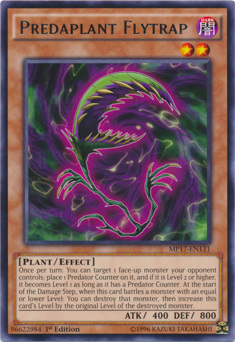 ”
and “Predator Plants Moray Nepenthes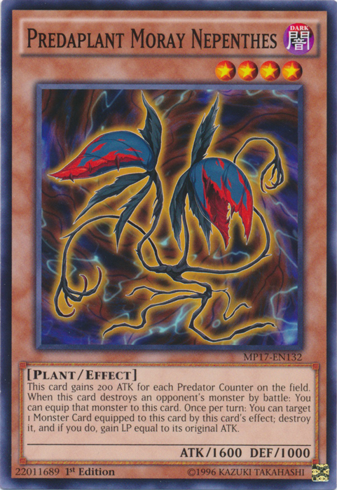 ”
in my hand for a Fusion Summon! Two beautiful flowers with an insect-alluring fragrance! Now become one, and from the hell beneath your petals, give birth to a new
terror! Yugo Shokan! Appear! Poisonous dragon with hungry fangs! Level 8,
“Starve Venom Fusion Dragon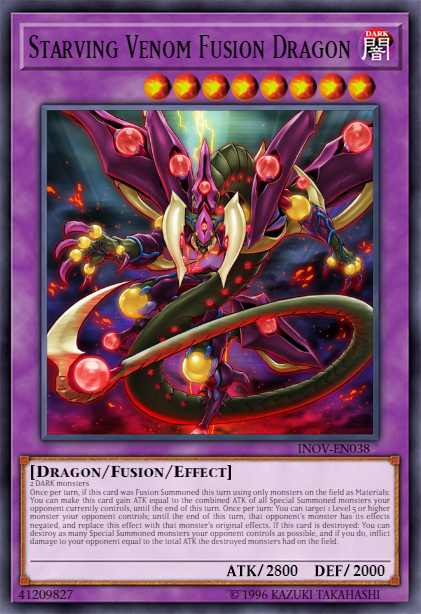 ” !
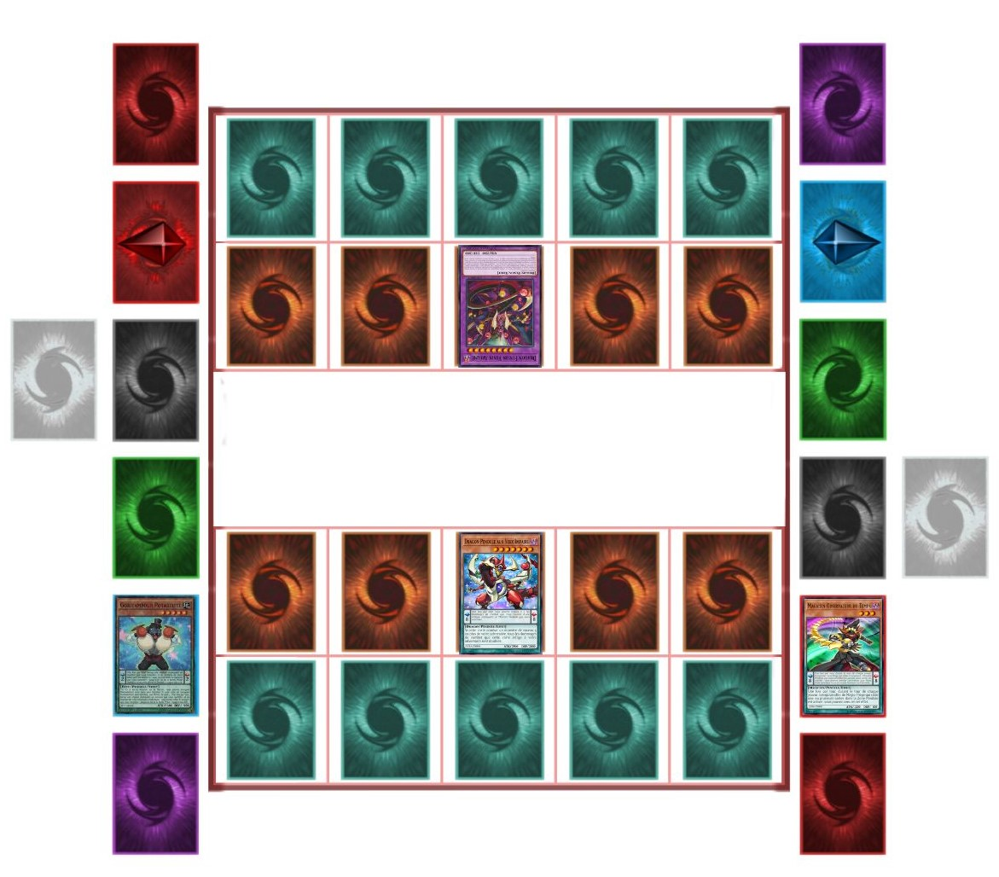
Opposing Yuya's“Odd Eyes ” de
was a dark purple dragon with horns like “Odd Eyes ”,
only inverted. It was also covered in dark yellow and light purple orbs and had a deadly tipped tail.
The two dragons then roared at each other, as if challenging each other to fight to the death. They also began to give off powerful auras as they cried out.
At the same time, Yuya and Yuri both felt a sharp pain in their chests. Yuya almost fell to his knees.
Yuya: Not again! Not now! He thought in panic, trying not to succumb to the pain.
Yuya: I have to protect... Yuzu !
Without warning, Yuzu's bracelet had started blinking pink light. This really surprised Yuzu and Sora.
Sora: What's up with your bracelet? Sora asked. A startled Yuzu shook her head, completely baffled.
Yuzu: I don't know. It's never done that before. Why is it doing that?
She then looked up to ask Yugi
if he knew, but the look he had told her it wasn't a good thing. It was not just him.
Judai,
Yusei,
Yuma, and even
Astral
(whom she couldn't see) looked extremely alarmed.
Yuzu: What's wrong Yugi?
Yuzu asked, now sounding scared. He and his friends looked at one another and knew instantly what this meant.
Atem (Yami Yugi): Yuzu, do you know if Yuya is still at his house?
Yugi asked urgently. This question stunned her and Sora.
Yuzu: Yuya? What's Yuya got to do with my bracelet?
What he said to her made her panic more than she had ever felt in her life.
Atem (Yami Yugi): I'm afraid that Yuya... is in terrible danger. Call him now!
Yugi strongly urged. At once, Yuzu got out her Duel Disk and speed dialed Yuya's number. Instead of ringing, a message popped up on the screen in the center.
"Unable to reach. Duel in progress."
This really shocked Yuzu.
Yuzu: WHAT?! Yuya is dueling right now?! He's not supposed to be doing that! What is that idiot thinking?!
She yelled in angry disbelief. She then tried to call Yuya's mom next. Thankfully, she picked up.
Yoko: Hello? Yoko asked when she answered.
Yuzu: Mrs. Sakaki, it's Yuzu! Tell me, is Yuya still there?! I need to talk to him now! It's important!
Yuzu requested hurriedly. Yoko, more alert after hearing the tone in Yuzu's voice, acted more serious.
Yoko: No. I'm sorry, but Yuya went to take a leisurely walk in the park not long after you and the others had left from here. He hasn't come back yet. You couldn't reach him?
She asked, now sounding worried.
Yuzu: I tried, but my Disk said Yuya was in the middle of a Duel! I never got through!
Yuzu replied. At this, Yoko went livid.
Yoko: He what?! I told Yuya he wasn't allowed to duel for a week! I can't believe he went behind my back like that! Bring him home this instant, Yuzu! When he
comes back, I'll ground him for a year!
Yoko practically screamed before hanging up. Yuzu was definitely worried now as she turned back to Yugi and the others.
Yuzu: Yuya's not at home! His mother said he went to the park, and apparently is dueling someone there!
Yusei: We have to go to the park now! Before it's too late! Yusei said as the whole group began to run.
Yuzu and Sora: Too late for what? Yuzu and Sora asked as they tried to keep up.
Yuma: If we don't reach Yuya in time, things will turn out very badly for him.
Yuma replied grimly. Yuzu and Sora's worry for Yuya grew even more, thinking his life could be in jeopardy yet again. Yugi and the others looked at one another. If
Yuya was dueling someone right now, then it could only be one person. And they knew that Yuya battling that person was the reason Yuzu's bracelet was going off.
Judai: One question Yuzu. Judai started as they ran.
Yuzu: What's that, Judai-san ? Yuzu asked.
Judai: You just said Yuya wasn't allowed to duel anyone. Why is that?
Judai asked. This made the rest of the group just as curious, except for Yugi and Sora. Yuzu grimaced.
Yuzu: Yesterday, Yuya suffered what looked like a heart attack! One moment he was fine, and the next he grabbed where his heart was and started screaming in agony!
That has NEVER happened to him in his life! If Yugi hadn't shown up and healed him, Yuya might have actually died!
Judai, Yusei, and Yuma turned to Yugi, alarmed.
Yuma: Yugi, is that true?
Yuma asked. Yugi nodded to confirm.
Atem (Yami Yugi): Yes. I was going to bring it up when we had our planned meeting, though I wasn't expecting something like this.
Yuzu then continued from there.
Yuzu: Well, after the incident, Yuya was taken to the hospital! The doctor couldn't actually find anything wrong with his heart, so he let Yuya go home! His mother
then forbad him to duel for a week as a precaution! She didn't want Yuya to do anything that would raise his heart rate too much! Why in the world would Yuya do
this?!
Yuzu said, worried as well as pissed at her friend.
Yugi and his friends knew they had to find Yuya before the unthinkable could happen. They prayed that they would reach the poor boy in time.
Atem (Yami Yugi): Yuya, hang on! We're coming Yugi thought, hoping it wouldn't be too late...
Back in the park, Yuya noticed that Yuri had grabbed his chest also. This really surprised him.
Yuya: You... you're hurting as well? Yuya asked painfully. On the other side, Yuri was surprised this was happening to him again.
Yuri: This pain... it's the same... as before...!
He then recalled back to when he suffered like this the first time. When he woke up in the Synchro Dimension after being knocked out, Yuri saw that both Rin and his
attacker were nowhere to be seen. He was completely alone.
He figured he must've been out for maybe an hour or so. He punched a wall, annoyed that another girl had gotten away from him, just like in the Xyz Dimension. Yuri
would have to search the whole damn City to track down Rin again. And when he found her and the punk that helped her, he would make the latter be sorry he ever messed
with him.
Yuri was about to head out when an unexpected pain occurred in his chest. He held a hand over where his heart was and started screaming, all the while his
eyes glowed purple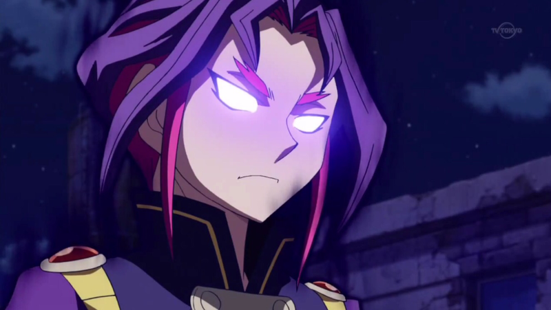. All his life,
he had never suffered anything like this. It was pure torture. The pain was so much he fell on the ground and rolled around, screaming.
He didn't know how long this went on, but just as sudden as the pain came, it dissipated. The experience caused him to fall consciousness again. He was then later
shaken awake by some guy with spiky purple and blue hair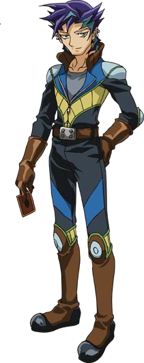.
Shinji Weber: Hey, you okay? The stranger asked. Yuri pushed him away as he got up.
Yuri: Get away from me!
Yuri said irritably as he got moving to track down Rin and her protector. Of course, he never found them and was forced to return to Academia empty handed once again.
After that, the pain never came again until today. He didn't mention this to anyone, not even to the Professor. He refused to show weakness in front of the man or
others.
He too noticed that Yuya was suffering the same thing as he did. He almost couldn't believe it.
Yuri: So... you too, huh?
Yuya: Why are we both hurting?
Yuri: Beats me, but it seems like we have... more in common... than just our looks.
Yuri then looked up at the dragons again. They were still roaring at each other, wanting to battle.
Yuri: Look at our dragons! They really want to fight one another! They want to tear each other to pieces!
Yuri said, sounding excited at the thought.
He hated to admit it, but Yuya was getting the same vibe off of his own dragon. He had no idea what was going on with him, Yuri, or their dragons. All he knew was that
he needed to finish this Duel quickly and reach Yuzu.
Starve Venom then spread out it's wings and fired a poisonous energy blast at Odd-Eyes. Thankfully, Yuya was prepared.
Yuya: I activate
“EntermateDrumming Kong ”
's Pendulum Effect! When a Monster I control battles an opponent's Monster, the Monster I control gains 600 Attack Points until the end of the Battle Phase! I raise
“Odd Eyes ”' Attack Power!
“Odd Eyes ”
then fired its own mouth blast to repel the attack of “Starve Venom ”.
Yuya: Now
“Odd EyesPendulum Dragon ”
' Effect activates! When it battles a Level 5 or higher Monster, any damage dealt to you is doubled! Reaction Force !
Red energy mixed in with Odd-Eye's attack as it pushed back Starve Venom's. To Yuya's surprise, Yuri had started laughing.
Yuri: Ku hu hu hu hu hu, Ha Ha Ha Ha Ha !
Yuya: What's so funny?
Yuri's eyes then formed into slits as he smiled evilly.
Yuri: You've just made a huge mistake, Yuya! By destroying my dragon, you've triggered it's own Effect! Yuri revealed.
Yuya: I what?!
Yuya replied, dreading what kind of Effect “Starve Venom ” could have.
Yuri: The effect of
“Starve Venom Fusion Dragon ”
is activated.
When he is destroyed, all Special Summoned Monsters on your Field are also destroyed! But it gets worse! You also take damage equal to the total Attack Points of
all your destroyed Monsters!
Yuya: “Odd Eyes ”
' Attack Power is at 3100, which means... !
Yuya started in horror.
Yuri: Right! You take 3100 points of Damage!
Just as he said this, “Starve Venom ”
got blown apart by his reflected attack from “Odd Eyes ”.
And then, “Odd Eyes ”
itself disintegrated in the explosion caused by “Starve Venom ”'s destruction.
The resulting blast blew Yuya back. He yelled as he hit his back hard at a tree before falling facedown on the ground.
Yuri: That had to hurt! Oh, if you thought you saw the last of my dragon, you're dead wrong! I play
“Shisha Sosei ”
to resurrect “Starve Venom ”
from the Graveyard.
Yuri's evil looking dragon returned with a triumphant roar.
Yuri: Then I Set my last 2 cards facedown and end my turn!
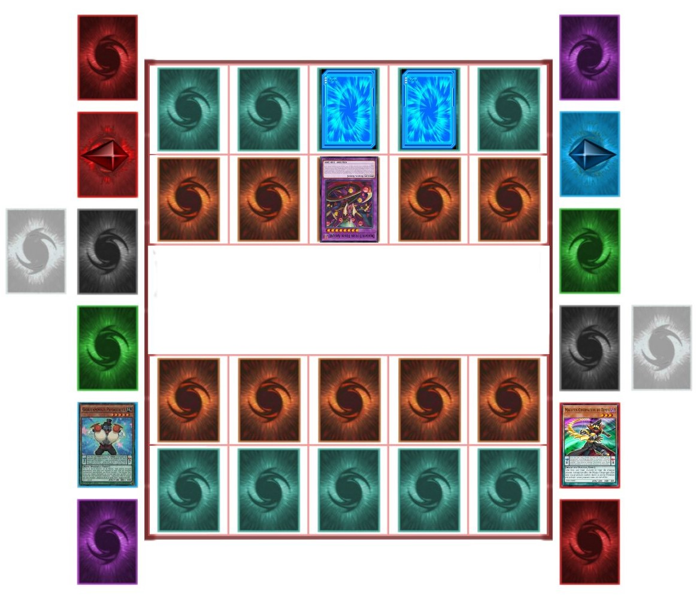
Yuri then looked over at the battered Yuya, who seemed to be struggling to get back up.
Yuri: Come on Yuya! Don't throw in the towel now! I've only just started getting entertained!
He said with a cruel laugh.
Yuya was hurting everywhere, not just in his chest.
Yuya: That explosion felt so real, like I was in an Action Duel... only this isn't an Action Duel. How could he inflict real damage?
Yuya barely got on his knees and breathed heavily.
Yuri: What's the matter? I thought you wanted to keep me away from Yuzu?
Yuri taunted.
Yuya: Don't you dare... say her name!
Yuya retorted weakly as he looked up at him. His evil lookalike snickered.
Yuri: So much concern. You sure she's just your friend?
Yuya stared back with both anger and surprise.
Yuya: What's that... got to do... with anything?
Yuri shrugged.
Yuri: I'm just saying. The way you're fighting so hard to protect her from me, with so much rage and determination... one would think you're in love with her.
Maybe you are just too dense to see that.
At these words, Yuya unexpectedly began to have thoughts of Yuzu again. Of all the good times he spent with her, and how she helped him through the bad times. Her warm
smile, her encouraging words, her pretty face... Yuya was shocked that he thought that last bit.
Yuya: Did I just thought that Yuzu's face was pretty?
As Yuya continued on his train of thought, he began thinking of other things about Yuzu he didn't actually notice before.
Yuya: It's not just her face. The way her hair looks in those pigtails. How warm and soft her hands are. The way her eyes shine when she sees me duel. Plus, she
always looked cute when she winked at her audience when she won a Duel. Why though? Why am I just now thinking of her like this?'
He then thought again of how he saw her when he woke in the hospital. When he saw her, the overhead light was just behind her head, obscuring everything but her face.
It was like looking at the face of an angel... his angel...
Yuya: That was it! It was during the moment looking at her in that bright light that I started having these weird thoughts! Maybe Yuri was right about one thing...
Yuya then actually smiled and placed his hand over his heart again. He now understood what was going on. He couldn't deny it anymore.
Yuya: I'm in love... with Yuzu.
In that moment, his pendent had started glowing. At the
same time, Yuya had a vision of a huge silhouette. Although it was obscured by shadow, Yuya could it was a dragon, and it roared like it was wanting to appear and
fight. Yuya understood this too as he finally got back on his feet.
Yuya: Well, finally ready to continue, Yuya? It would be too tragic if I'd beaten you this easily.
Yuri said gleefully.
Yuya: I am ready... to defeat you Yuri!
Yuya said loudly as he prepared for, possibly, his last turn.
Yuya: Yuzu is the most important person in my life, and you won't take her away from me! IT'S MY... TURN!
He shouted as his pendent continued to shine. He liked what he drew.
Yuya: I have what I need to save Yuzu from you and this Professor you work for!
Yuya strongly declared.
Yuri: Then let's see it! Bring it on! Yuri eagerly waited to see what Yuya would try next.
Yuya: First I play
“Entermate Special ”
. his let's me Special Summon an "Entermate" Monster from my hand if I have no Monsters on my Field! I Special Summon
“Entermate Hammer Mammo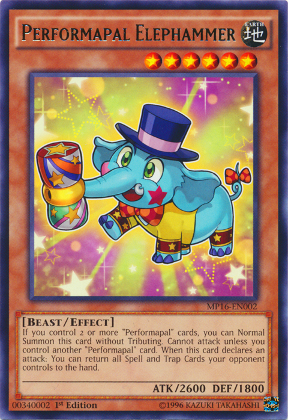 ” !
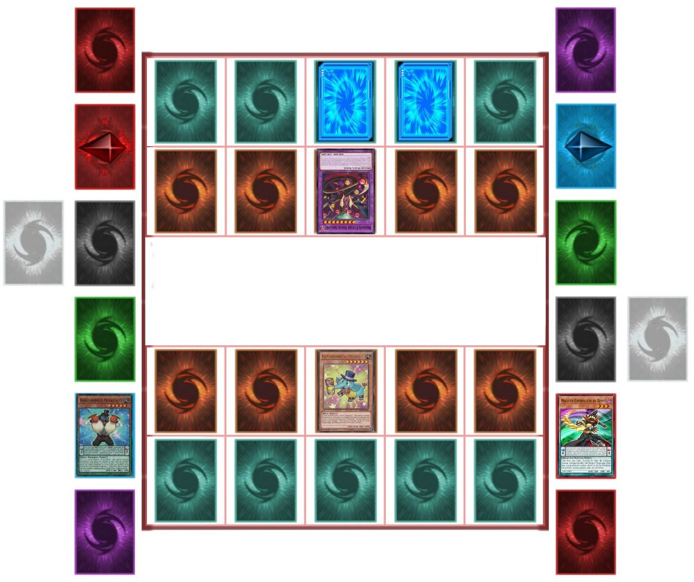
Before Yuri seemed to be a top hat wearing light blue elephant with a mallet attached to it's trunk. He laughed until his sides ached.
Yuri: Pfft ! Ha Ha Ha Ha Ha Ha ! Wait... what's that?Don't tell me is that it? Your big comeback?! Your puny pachyderm can't hold a candle to “Starve Venom ”
! It'll just gobble him right up! Yuri ridiculed.
Yuya: He's not the one you should be worried about. Yuya said, making Yuri stop laughing.
Yuya: I Sacrifice “Hammer Mammo ”
to Advance Summon this monster. Show yourself! Mighty dragon born of courage and determination. May your majestic wings protect the weak, and may your wrath
annihilate the darkness.
“Odd Eyes Advance Dragon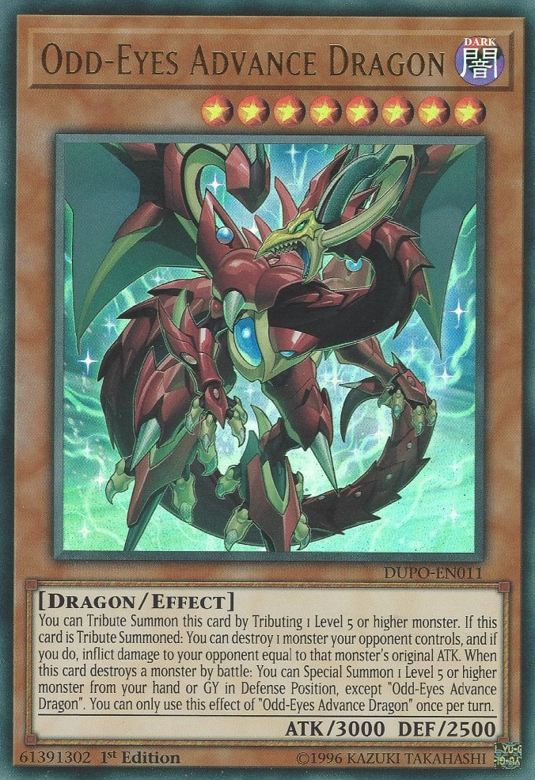 ”
!
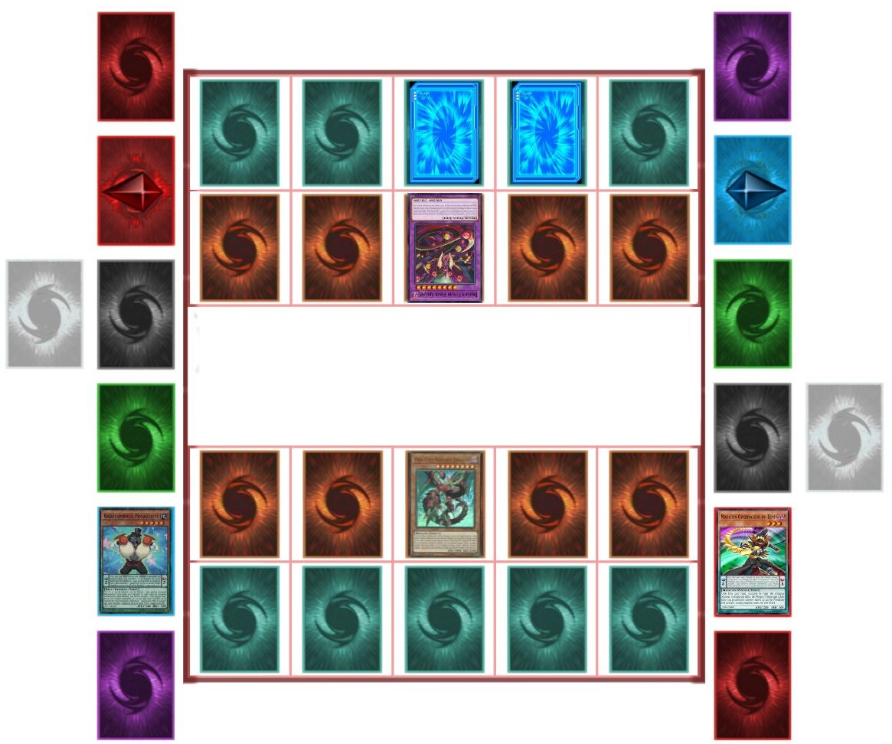
Yuya's new dragon looked a lot like original “Odd EyesPendulum Dragon ”,
but with no orbs, had more dragon like wings and seemed much more mature.
Yuri: Now that's more like it! Yuri said, amazed.
Yuya: “Odd Eyes Advance Dragon ”
can be Advance Summoned if I Sacrifice a Level 5 or higher Monster, like my “Hammer Mammo ”
. Also, since it was Summoned this way, my new dragon's Monster Effect activates! I can destroy one Monster you control and inflict damage to you equal to that
Monster's original Attack Points! Now taste your own medicine!
Yuya shouted.
Yuri: What!?
Yuri was forced to watch “Starve Venom ”
be destroyed yet again, this time taking much more damage.
Yuri: Gaaah !
(Yuri: 3400 LP - 2800 LP = 600 LP)
Yuya: Since
“Odd Eyes Advance Dragon ”
wasn't Special Summoned
“Starve Venom ”
's Effect can't destroy it! I got you now!
Yuya declared. Yuri grunted.
Yuri: Don't count on it! Trap card open,
“Living Dead no Yobigoe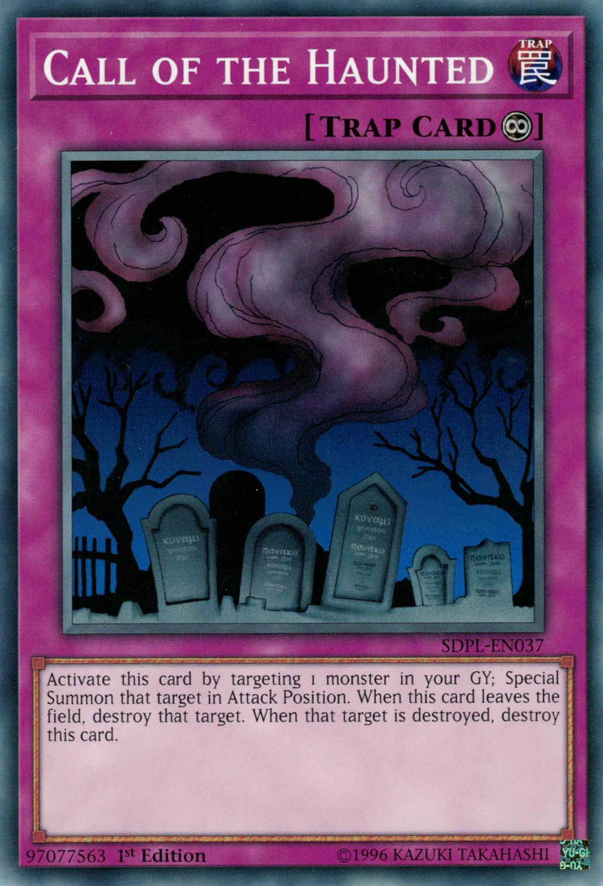 ”
. I can bring back a Monster from my Graveyard in Attack Mode! Return, “Starve Venom Fusion Dragon ”
!
Yuya gritted his teeth that Yuri brought back his dragon yet again.
Yuya: I'm not done! With the Set Pendulum Scale, I can Pendulum Summon again! Swing again! Pendulum of souls! Draw an arc of light across the ether!
Pendulum Shōkan! Return from my Extra Deck!
“Odd EyesPendulum Dragon ”
!
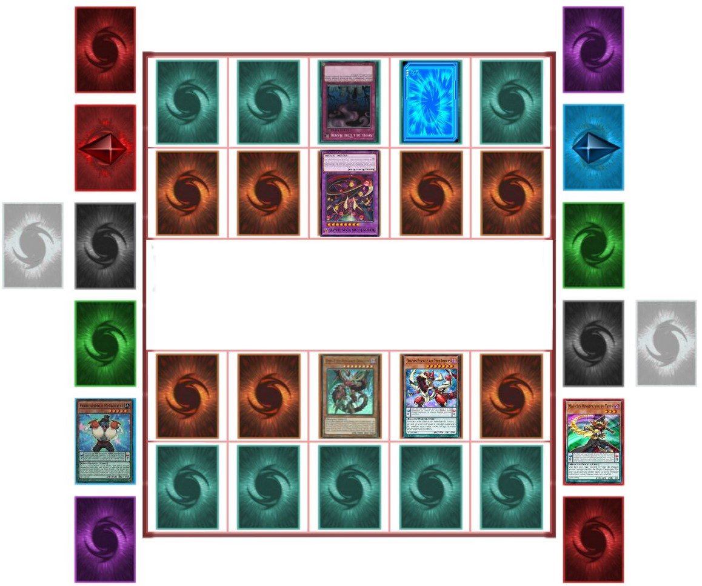
Yuri was surprised that Yuya's dragon also returned, despite having destroyed it earlier.
Yuri: Wait, you can Pendulum Summon Monsters from the Graveyard?!
He said in astonishment.
Yuya: “Odd EyesPendulum Dragon ”
was never in my Graveyard! When a Pendulum Monster on the Field is sent to the Graveyard, it instead goes to my Extra Deck! From there, as long as I have my
Pendulum Scale, I can Pendulum Summon that Monster back!
Yuya explained.
Yuri was actually impressed. He never knew that the Standard Dimension had such Monsters. But still, this didn't change anything. He had no intention of losing and
failing another capture assignment.
For the second time, Yuya's Ace Monster fired a blast at Yuri's Ace.
Yuya: Now
“Drumming Kong ”
's Pendulum Effect activates again!
“Odd Eyes ”
' Attack Power goes up by 600!
(Odd-Eyes Pendulum Dragon: 2500 + 600 = 3100 ATK)
With it's Attack Points at 3100 once again, Yuya's dragon was more than capable of vanquishing it's enemy dragon. However...
Yuri: Nice try! Trap card open,
“Dark Seed Planter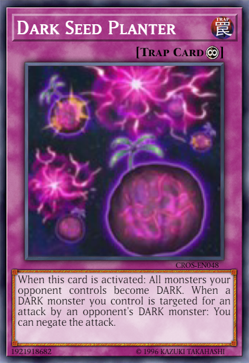 ”
. As long as this card is active, all Monsters on the Field are treated as DARK Monsters!
Yuri said, activating his last facedown card.
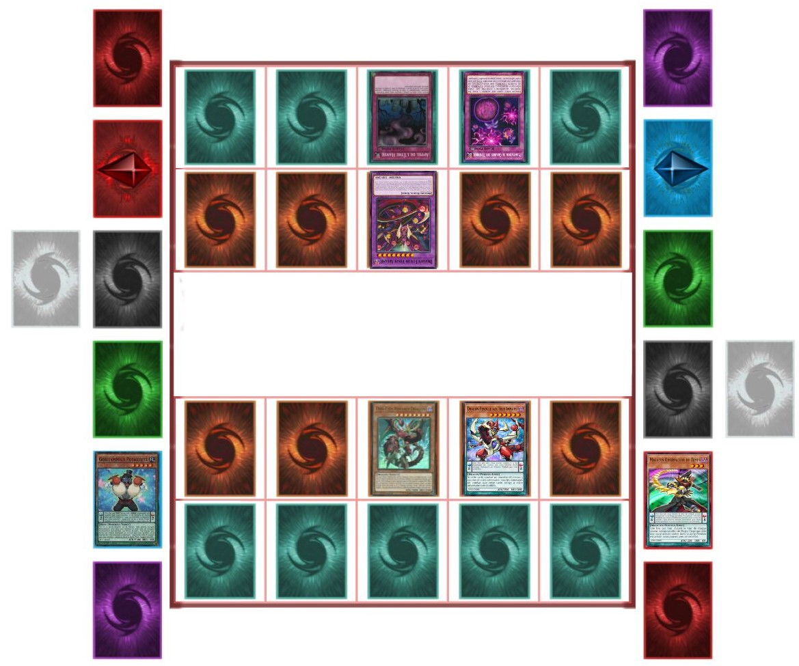
Yuya: What's the point of doing that? All our Monsters are already DARK!
Yuya said, confused by his lookalike's latest move.
Yuri: There's more to it! When my opponent's DARK Monster attacks a DARK Monster I control, that Monster's attack is negated!
“Starve Venom ”
isn't going anywhere this time!
Yuri said as he laughed again.
Yuya: I don't think so! I activate
“Tokiyomino Majutsushi ”
's Pendulum Effect! Once per turn, during either of our turns, when my opponent activates a Trap that targets a Pendulum Monster I control and no other cards, I
can negate that Trap and Set it back facedown on the Field!
Yuya countered.
Yuri: Are you kidding me?!
Yuri said, shocked that his Trap got negated like that.
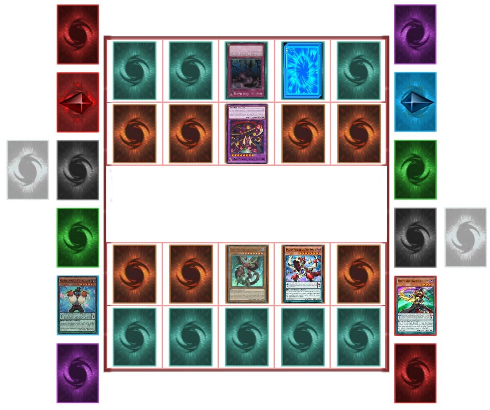
Yuya: Now
“Odd Eyes ”
's final attack continues! And don't forget about my dragon's own Effect! When
“Odd Eyes ”
battles a Level 5 or higher Monster, any damage dealt to you is doubled! ITS OVER YURI! REACTION... FORCE !
As Yuri watched his dragon being obliterated for the last time, all he could think of doing... was laugh.
Yuri: I've... lost? He's actually beaten me? Ha... Ha Ha... Ha Ha Ha Ha Ha Ha Ha Ha Ha Ha Ha Ha !
He then laughed manically as he was blown away from Yuya's final attack and landed on his back, defeated.
(Yuri: 600 LP - (300 x 2) LP = 0 LP)
Yuya stood there, breathing hard and aching from his fresh wounds. His chest still hurt the most, but it wasn't as bad now.
Yuya: I've... beaten him.
He then began slowly approaching Yuri.
From atop a tree, Dennis had observed the unthinkable. He had just barely returned to witness Yuya's unprecedented victory over Yuri.
Dennis: Yuri... lost? It can't be!
He said softly in total shock. First Edo was forced to retreat, now this. The Professor would definitely go through the roof when he heard about this one.
When he reached the beaten Yuri, his eyes were closed and he too was aching. He was also holding a card in his hand. Yuya knelt down and grabbed his collar.
Yuri: Alright, talk. Why are you after Yuzu? Tell me!
Yuya demanded. Before Yuri could answer, the card glowed a bright purple light. At the same time, a slot in Yuya's Duel Disk also gave off a bright light that enveloped them both.
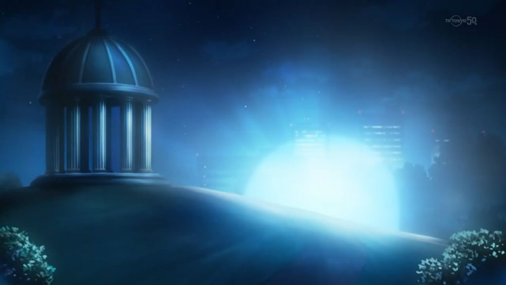
Dennis: Huh!? What the heck? What's going on?!
Dennis asked, his confusion growing. He could no longer see Yuya and Yuri, only the dome of purple light covering them.
Inside the dome, Yuya still knelt next to Yuri. He opened his eyes and looked up at Yuya. To Yuya's surprise, his twisted counterpart smiled.
Yuri: Well... damn... You got me. I can't believe that i've lost... Especially from a guy that looked like me.
Yuya refused to be distracted.
Yuya: Answer me Yuri! What did Yuzu do to deserve being kidnapped?
He asked angrily. Yuri then chuckled weakly.
Yuri: Not a damn thing. I was only doing it because the Professor ordered me too. I had no idea why. I just do what I'm told. If you want answers, you should ask him.
Yuri responded. Yuya grunted in disappointment.
Yuri: Though, I should probably thank you.
Yuya: Thank me? For what? Yuya questioned, not understanding what Yuri was getting at.
Yuri: I've failed him a lot recently, and each time he gets more and more pissed off. Once he hears about this, I have no doubt he'll dispose of me for not getting
him what he desired. This way, I won't have to confront him. It is better that I... never return to him.
He said as he now gave a sad smile.
Yuya: Yuri...
Yuya said softly, his anger draining away. Even though he still hated him for planning to capture Yuzu, he also felt sorry to hear him talk like his life was over.
Yuri: I'm really happy that you're the first person to beat me.Also, I think you should have this...
Yuri then lifted up his hand holding the glowing card, which turned out to be...
Yuya: “Starve Venom Fusion Dragon ”
?
Yuya asked, stunned that Yuri was offering his ace Monster to Yuya.
Yuya: But that's your card! Why give it to me?
Yuri painfully shrugged.
Yuri: Because... it's telling me too. Can't your hear it talking? Can't you hear…your own dragon telling you the same thing?
Yuya was dumbfounded by Yuri's questions. Although, come to think of it, Yuya did start to hear something from both inside his Duel Disk and from Yuri's card. Not only
did he hear two distinct sounds, but to his amazement he also understood them. Yuya understood that
“Starve Venom ” wanted to be accepted by him, and that
“Odd Eyes ”
also urged to accept the dragon it was forced to battle.
Even though nothing still made any sense to him, Yuya realized he couldn't ignore the pleas of the two dragons. Finally, Yuya made his choice and took
“Starve Venom Fusion Dragon ” from Yuri.
Looking pleased, Yuri told his lookalike one more thing before his life expired.
Yuri: Hey, Yuya. Do yourself a favor and keep your girlfriend out of harms way. Even if I'm gone, the Professor won't stop going after her... or the others. If you
fight against him with the same tenacity you used against me, then Yuzu should be... fine...
Yuri smiled at Yuya once more before the bright light started to consume both counterparts...
At the same time, Yugi's group finally reached the park.
Sora: We're here!
Sora said, nearly out of breath. He still hadn't recovered from his injuries.
Yuma: Let's hope Yuya is alright. Yuma said. A moment later, Yuzu's bracelet then gave off a bright pink light.
Yuzu: Now what? Why is my bracelet glowing so bright like this? Yuzu said in surprise. Yugi and the others, except Sora, knew what that meant.
Yugi: Maybe it's not too late after all.
The otherYugi hoped.
Atem (Yami Yugi): I hope so. Wait! You feel that, Aibou ?
Atem asked as he and Yugi noticed their Puzzle also giving off a faint glow.
Yugi: Why's the Millennium Puzzle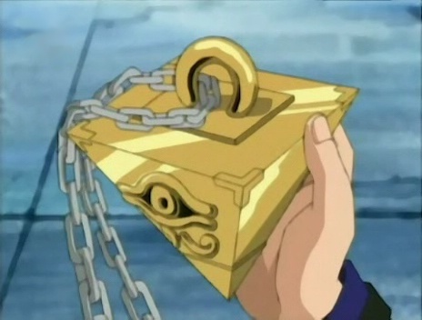 glowing too? Is it somehow reacting to Yuzu's bracelet?'
Yugi asked in confusion.
Atem (Yami Yugi): I'm not sure.
Before either of them could understand this, both the Puzzle and Yuzu's bracelet stopped glowing and became inactive once more.
Yuzu: Now my bracelet has stopped! What does it mean?
Yuzu asked Yugi. Before he could say something...
Yusei: There!
Yusei shouted. They all looked ahead and finally spotted Yuya. He was kneeling on the ground, alone, staring off into space.
Yuzu: Yuya!
Yuzu shouted. Yuya didn't seem to hear her as he fell facedown on the ground. When they reached him, Yuzu and the others were shocked that Yuya was covered in
injuries. This really worried the girl.
Yuzu: Yuya? Yuya, wake up! Are you alright? It's me, Yuzu! Wake up Yuya! YUYA!
She yelled as she tried to shake her friend awake, but to no avail. He was completely unresponsive. Yusei then checked his pulse.
Yusei: He's alive, just out cold. We need to get him back home.
Astral: There is no sign of Yuri anywhere. Perhaps Yuzu got in range of them both before the process could be completed.
Astral said after looking around the area.
Judai: I wouldn't be so sure, Astral.
Judai said as he pointed to something in Yuya's hand. Yugi saw what it was and cursed under his breath.
Atem (Yami Yugi): No. We were too late...
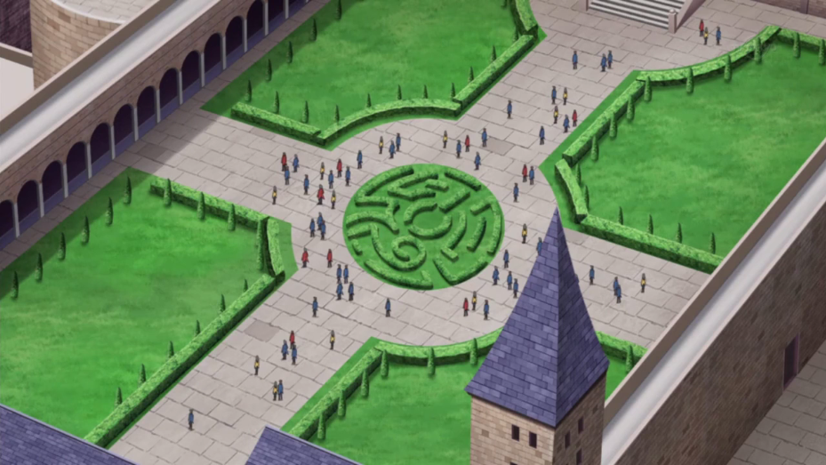
In Academia, a couple of students were having a stroll in the courtyard when they saw someone laying unconscious on the ground.
Student (Boy): Hey! Is that guy okay? Said the boy among the pair.
Student (Girl): I'll look after him, you go get some help!
Said the girl that was with him. Nodding, the boy ran inside to find someone. While she waited for help to come, the girl kneeled and watched over the injured, unmoving form of Yuri.
Student (Girl): What the heck happened to you? She whispered.
 went
up to his room, fell back on his bed, and sulked. No matter what he said about him being fine, his mom
went
up to his room, fell back on his bed, and sulked. No matter what he said about him being fine, his mom wouldn't hear of it. He still couldn't believe he wasn't allowed to duel for a whole week! He'd been dueling for years, and he didn't have any issues up till now. He
had been raised to be both healthy and athletic, both of which are necessities for Action Duels.
wouldn't hear of it. He still couldn't believe he wasn't allowed to duel for a whole week! He'd been dueling for years, and he didn't have any issues up till now. He
had been raised to be both healthy and athletic, both of which are necessities for Action Duels.


.png)